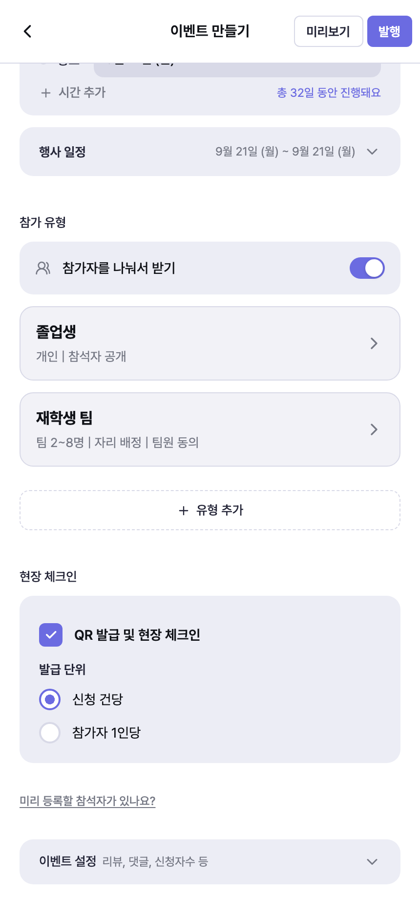
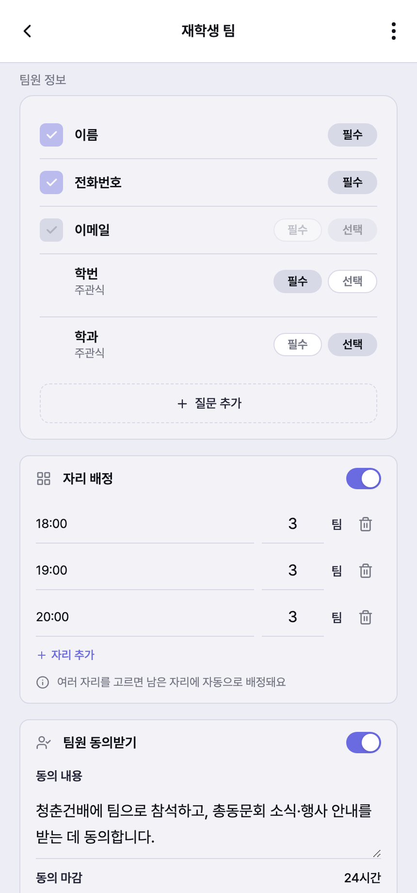
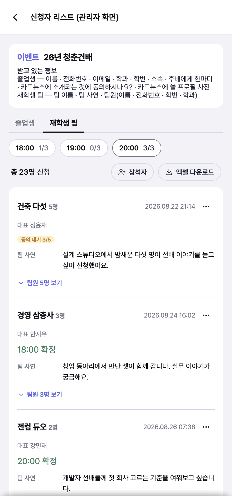
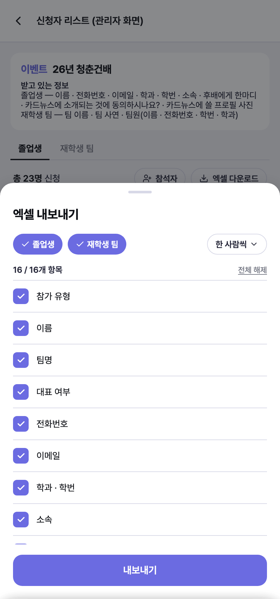
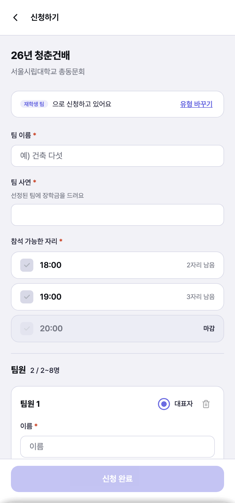
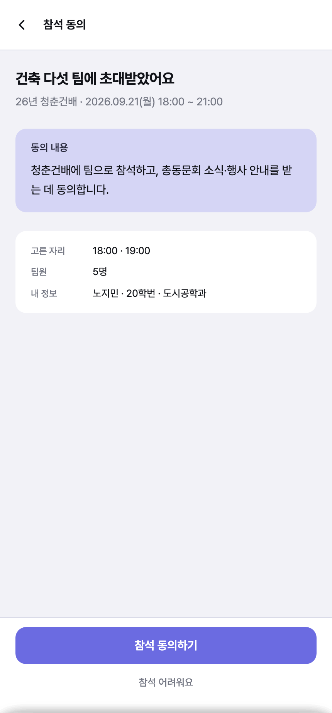
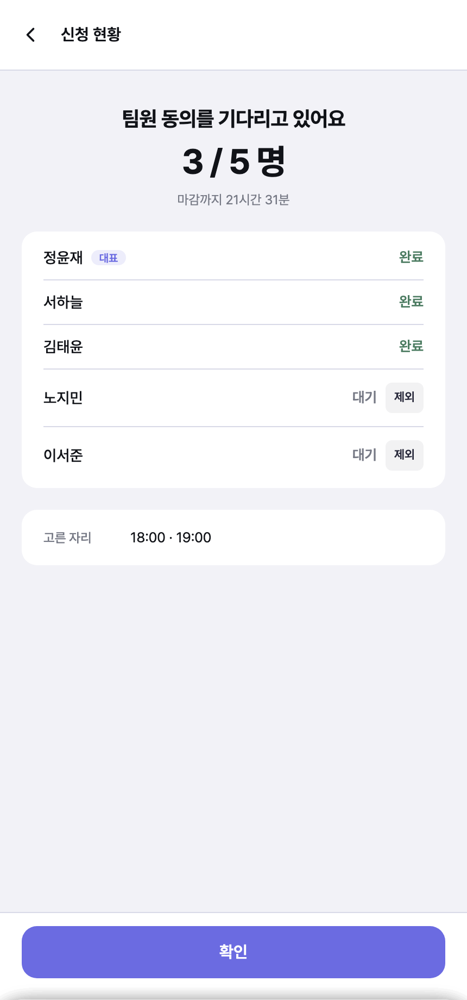
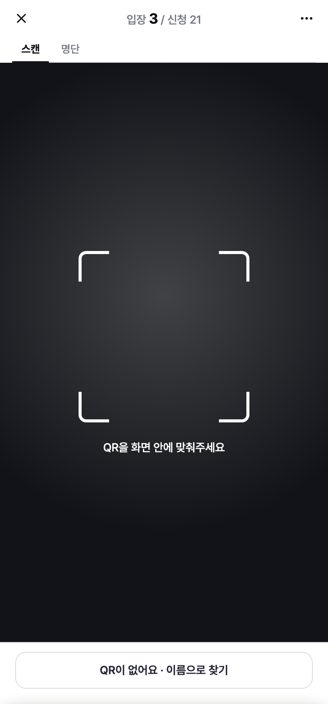
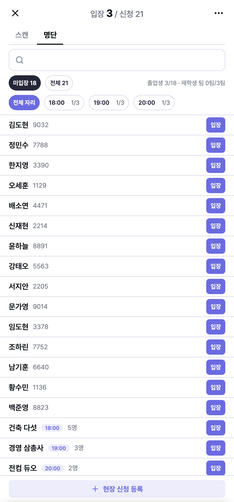

서울시립대학교 총동문회
이번 행사에 들어갈 기능을 주최측이 할 일 · 참가자가 겪을 흐름 · 당일 현장 세 갈래로 정리했습니다. 아래 화면은 모두 실제로 만들어 둔 것이고, 신청폼과 안내 문구는 행사에 맞게 바꿀 수 있습니다.
팀원 한 사람 한 사람이 직접 동의합니다
대표자가 대신 동의하지 않고, 팀원마다 본인 휴대폰으로 직접 동의합니다.
가능한 시간을 여러 개 고릅니다
참석 가능한 시간을 여러 개 고르면, 그중 자리가 남은 곳으로 자동 배정됩니다.
응답 없는 팀원은 뺄 수 있습니다
연락이 닿지 않는 팀원은 대표자가 명단에서 뺄 수 있습니다.
신청폼은 저희가 미리 채워 둡니다
받을 항목과 안내 문구를 저희가 세팅해 드리고, 이후에는 직접 고치실 수 있습니다.
주최측이 할 일
주최측이 직접 다루는 부분입니다. 모집 전 준비 두 가지, 모집 중 확인 한 가지, 마감 후 정리 한 가지로 나뉩니다.

졸업생은 혼자, 재학생은 팀으로 신청합니다. 유형을 나누면 신청폼·안내 문구·자리 배정을 각각 다르게 정할 수 있습니다.
목록에는 유형 이름과 켜 둔 설정만 보입니다. 카드를 누르면 그 유형만 다루는 화면으로 들어갑니다.

18:00 · 19:00 · 20:00처럼 시간대를 만들고, 각 시간대에 몇 팀을 받을지 적습니다. 이름은 자유롭게 정할 수 있어 A 테이블 · 1부처럼 테이블 이름을 그대로 써도 됩니다.
같은 화면에서 팀원 동의받기를 켭니다. 팀원에게 무엇에 동의를 구할지 문구를 적고, 언제까지 답해야 하는지(예: 24시간) 정합니다. 이 문구가 팀원 휴대폰에 그대로 보입니다.

위쪽에 시간대마다 몇 팀이 찼는지가 나옵니다. 정원이 차면 표시가 진해지므로, 어느 시간대를 더 열어야 할지 바로 보입니다.

명찰은 저희가 직접 만들지 않습니다. 대신 명찰에 넣을 정보만 골라 엑셀로 내보내, 캔바 같은 도구의 대량 제작 기능에 그대로 넣으시면 됩니다.
졸업생만 고르면 팀에만 있는 항목은 목록에서 자동으로 빠지므로, 필요 없는 빈 칸이 생기지 않습니다.
참가자가 겪을 흐름
재학생 팀이 신청부터 자리 확정까지 거치는 과정입니다. 주최측이 손댈 일은 없고, 이렇게 흘러간다는 것만 아시면 됩니다.
대표자가 팀으로 신청
팀 이름과 팀원 정보를 적고, 참석 가능한 시간을 여러 개 고릅니다.
팀원 전원에게 알림톡
대표자를 뺀 팀원 모두에게 동의를 구하는 알림톡이 나갑니다.
팀원이 각자 동의
본인 휴대폰에서 링크를 열어, 대표자가 적어 낸 내 정보를 확인하고 직접 동의합니다.
전원 동의 시 자동 배정
마지막 사람이 동의하는 순간, 고른 시간 중 자리가 남은 곳으로 배정되고 신청이 확정됩니다.



대표자에게도 신청 직후 현황을 확인하라는 알림톡이 갑니다. 남은 인원과 마감까지 남은 시간은 현황 화면에서 볼 수 있습니다.
연락이 닿지 않는 팀원은 제외를 눌러 뺄 수 있습니다. 그러면 남은 인원만으로 바로 확정됩니다. 한 사람 때문에 팀 전체가 신청을 못 마치는 상황을 막기 위한 것입니다.
당일 현장 운영
신청이 확정되면 참가자에게 입장용 QR이 발급됩니다. 입구에서는 그것만 확인하면 됩니다.


입구를 도와주실 스태프에게는 체크인 전용 링크를 보내 드립니다. 스태프 화면에서는 참가자 연락처 같은 정보가 보이지 않습니다.
명찰은 모집이 끝난 뒤 필요한 항목만 골라 엑셀로 내보내, 캔바 등의 대량 제작 기능으로 한 번에 만드실 수 있습니다. (자세한 방법은 위 주최측이 할 일을 참고해 주세요.)
화면 속 이름·문구·시간은 설명을 위한 예시입니다. 실제 행사에 맞게 저희가 먼저 세팅해 드리고, 이후에는 주최측이 직접 고치실 수 있습니다. 더 필요한 기능이나 바꾸고 싶은 부분이 있으면 편하게 말씀해 주세요.